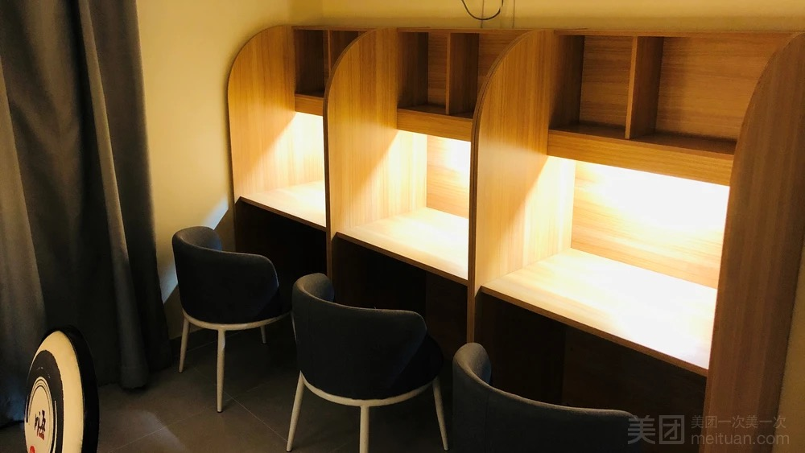
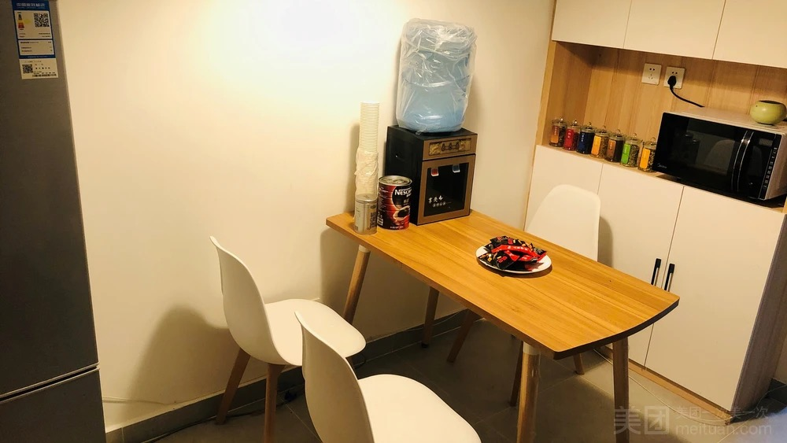
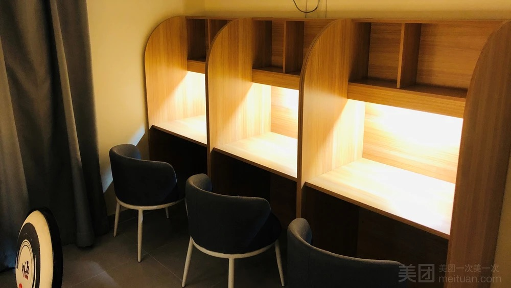
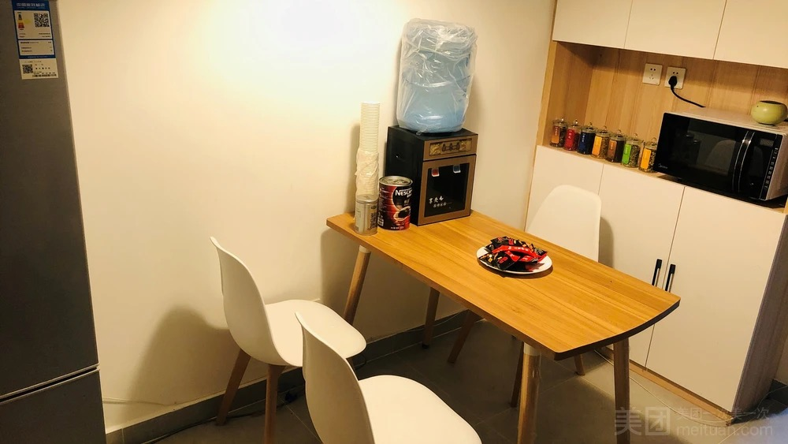

去了很多自习室，上岸自习室算是非常好的自习室了。首先，这个自习室的桌子很大，而且每张桌子上都有书架，坐在上面不会很挤，不会像别的自习室一样，桌子太小，写字不方便。
其次，房间里面就有空调，可以自己调节温度，不会太热也不会太冷，温度很适合学习。
第三，客厅和自习室是分开的，这样即使在客厅吃饭味道也不会进到自习室里，而且可以点外卖在那边吃，很方便。
最后，学习累了可以看猫咪，短腿的猫咪太可爱了。性格也超级好。老板人也很好。
很值得去的自习室。
- 上岸共享自习室 -
有就餐区域
有朗读间
海淀区后屯路文晟家园南区一号楼一单元201
400 030 3096,,35964#
4.7
店铺评分
100%
好评率
- 店内图片 -
 



- 有关评价 -

sYX334554547
匿名用户
能专注学习的感觉真的太棒了!不知不觉自己的效率也提高了很多!下次还会再来!中间休息的时候去撸了撸猫，两只猫都好可爱啊!还很配合我拍了照片，满足!
VvS196678608
昨天去的，刚刚开业，还没有多少人，地理环境很不错，楼下就有商场，从窗户就能看到，地铁站公交真也很近，交通很便利，里边的环境也很好，很安静，有空调、空气净化器、咖啡、茶，窗边的视角也很好，累了看看窗外，还可以点外卖，完全可以在里边泡一天，而且在安静无人打扰的环境下效率会很高。